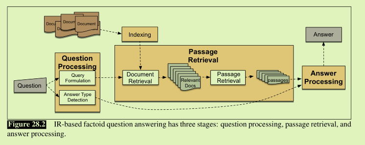
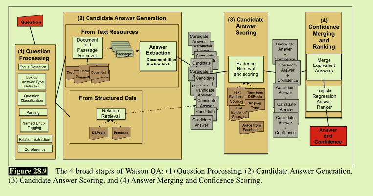

Question answering
factoid question: 可以用简短的事实回答的问题
two paradigms：
IR-based/text-based question answering
依赖大量信息或者数据集例如PUBMED,给定问题从这些documents中抽取passage处理问题先确定可能的答案类型（通常是命名实体）
制定查询发送到搜索引擎-
搜索引擎将排序的文档分解成合适的段落并排列
最后答案从passages中提取并排序
- knowledge-based question answering
构建查询的语义表示，query的含义可以是完整的谓词演算语句
大型的系统一般是混合的，IBM Waston里的DeepQA就用了结构化知识库和文本数据集来回答问题。
从问题中提取各种含义
（parses，关系，命名实体，本体论信息ontological information）
在知识库和维基百科等文本来源中发现大量候选答案
使用各种知识对候选答案进行评分
IR-based
goal:web/文本上找到短文本来回答问题
3个阶段phases：

1.question processing
提取信息：答案类型-实体种类（人，地点）
query指定了IR系统搜索时用的关键字。
有的系统也提取一个focus：可能被任何答案中的字符串替换？？
逗得系统也分类问题的类型Answer type：数学问题，列表问题
Which US state capitol has the largest population?
The query processing should produce results like following:
Answer Type: city
Query: US state capitol, largest, population
Focus: state capitol
1.1 常用任务1：Answer Type Detection (Question Classification)
可以从一组命名实体找到answer type 还有wordnet
可以通过手写规则，监督机器学习或者某些组合来构建
用于分类的典型特征包括问题中的单词，词性，命名实体
1.2 常用任务2：Query Formulation
创建可以发送到搜索引擎的关键字列表
应用较小文档时，还可以应用扩展：内容单词的所有形态变体或者同义词
2.passage retrieval and ranking
处理阶段创建的query用于检索系统
document retrieval的结果是一组documents，尽管doucuments排好序了
但顺序可能不对，document不是一个适当的单位。
下一阶段是提取一组潜在的答案passage，定义passage方法不同，
有sections,paragraphs,sentences等。
passage retrieval：过滤，剩下的基于监督的机器学习排序。
特征主要有：
正确类型的实体数量，
段落中问题关键字的数量，
问题关键字的最长确切序列，
段落所在文档的排名，
关键字之间的最短跨度，
passage和question之间的N-gram overlap
3.answer processing
两类算法：
基于答案类型模式的提取answer-type pattern extraction
正则和预测答案类型
基于N-gram拼图 N-gram tiling或者叫基于冗余redundancy-based approach
knowledge-based
把文本字符串映射到语义解析，再映射到一些谓词演算或者查询语言中，比如SQL，
问题的逻辑形式也可以是查询形式。数据库可以是关系式的也可以是简单的结构化数据库比如RDF三元组（有两个参数的谓词）。
最简单的形式是回答一个三元组缺失论点之一的类型问题。
主要方法：
Rule-based Methods
Supervised Methods
Dealing with Variation: Semi-Supervised Methods半监督的方法
watson deepQA system

Evaluation of Factoid Answers
mean reciprocal rank, or MRR